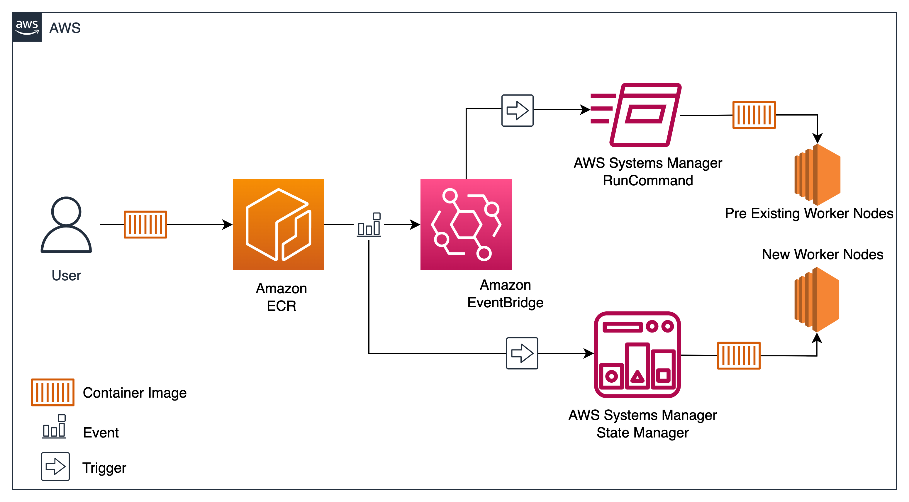
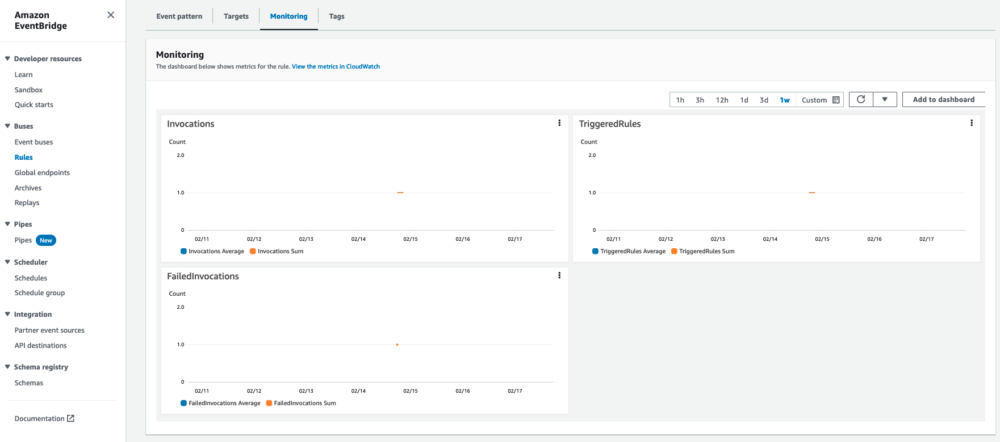

Event Driven process to prefetch data to EKS Nodes using SSM Automation¶
Introduction¶
To-Do
Benefits of Event-Driven Data Prefetching Event-driven data prefetching provides several benefits, including:
Improved performance: By fetching data in anticipation of future requests, you can reduce the latency and improve the overall user experience.
Reduced server load: By fetching data ahead of time, you can reduce the load on your servers, allowing them to handle more requests.
Increased reliability: By automating the process of fetching data, you can reduce the risk of errors and improve the reliability of your system.
In this blog, we will demonstrate the usage of AWS Systems Manager SSM Automation and State Manager to prefetch container images to your existing and newer worker nodes of your Amazon EKS Cluster.
Solution Overview¶
Below is the overall architecture for setting up Event Driven process to prefetch data to EKS Nodes using SSM Automation

The process for implementing this solution is as follows:
- The first step is to identify the image repository to fetch the container image. The container image repository could be Amazon Elastic Container Registry (Amazon ECR), DockerHub or others. For this demonstration we are using Amazon ECR as the image source.
- Next, when a container image gets pushed to Amazon ECR, an event based rule is triggered by Amazon EventBridge to trigger an AWS SSM automation to prefetch container images from Amazon ECR to your existing Amazon EKS worker nodes.
- Whenever a newer worker node gets added to your Amazon EKS cluster, based on the tags on the worker node, Systems Manager State Manager Association on tags acts on to prefetch container images to newly created worker nodes.
Solution Walkthrough¶
Prerequisites¶
To run this solution, you must have the following prerequisites:
- AWS CLI version 2.10 or higher to interact with AWS services
- eksctl for creating and managing your Amazon EKS cluster
- kubectl for running kubectl commands on your Amazon EKS cluster
- envsubst for environment variables substitution (envsubst is included in gettext package)
- jq for command-line JSON processing
Source Code¶
Checkout the source code, the source code for this blog is available in AWS-Samples on [GitHub] (https://github.com/aws-samples/containers-blog-maelstrom/tree/main/prefetch-data-to-EKSnodes)
mkdir aws-prefetch-data-to-EKSnodes && cd aws-prefetch-data-to-EKSnodes
git clone https://github.com/aws-samples/containers-blog-maelstrom/tree/main/prefetch-data-to-EKSnodes .
Implementation Steps¶
-
Let’s start by setting a few environment variables.
export EDP_AWS_REGION=us-east-1 export EDP_AWS_ACCOUNT=$(aws sts get-caller-identity --query 'Account' --output text) export EDP_NAME=prefetching-data-automation -
Create Amazon Elastic Container Registry repository.
aws ecr create-repository \ --cli-input-json file://repo.json \ --repository-name ${EDP_NAME} -
Create an Amazon EKS Cluster using the below commands. Using envsubst utility we will be replacing the variables in the Yaml Config file and using the eksctl CLI tool will deploy the cluster.
envsubst < cluster-config.yaml | eksctl create cluster -f - -
Build a large docker image size of approximately 1 GB to test this solution by running below shell script.
./build-docker-image.sh -
Create prefetching-data-automation-role with trust policy events-trust-policy.json which will be assumed by Amazon EventBridge service.
aws iam create-role \ --role-name $EDP_NAME-role \ --assume-role-policy-document file://events-trust-policy.json -
Run the below command to replace variables in events-policy.json policy file by using envsubst utility and attach the policy to the above created 'prefetching-data-automation-role' role.
aws iam put-role-policy \ --role-name ${EDP_NAME}-role \ --policy-name ${EDP_NAME}-policy \ --policy-document "$(envsubst < events-policy.json)" -
Create Amazon EventBridge Rule to trigger SSM Run Command on successful ECR Image push, using envsubst we will be replacing the variables in the events-rule.json file.
envsubst < events-rule.json > events-rule-updated.json \ && aws events put-rule --cli-input-json file://events-rule-updated.json \ && rm events-rule-updated.json -
Attach the Target as AWS Systems Manager Run Command to AWS EventBridge Rule created above, using envsubst we will be replacing the variables in the events-target.json file.
envsubst '$EDP_AWS_REGION $EDP_AWS_ACCOUNT $EDP_NAME' < events-target.json > events-target-updated.json \ && aws events put-targets --rule $EDP_NAME --cli-input-json file://events-target-updated.json \ && rm events-target-updated.json -
Create AWS Systems Manager State Manager Association for new worker nodes to prefetch container images, using envsubst we will be replacing the variables in the statemanager-association.json file.
envsubst '$EDP_AWS_REGION $EDP_AWS_ACCOUNT $EDP_NAME' < statemanager-association.json > statemanager-association-updated.json \ && aws ssm create-association --cli-input-json file://statemanager-association-updated.json \ && rm statemanager-association-updated.jsonNote: Status might show failed for the AWS SSM State Manager association as there is no image present in ECR yet.
Validation¶
Now the setup is complete, let’s run some validations on the setup for Event Driven process to prefetch data to EKS Nodes.
First test¶
Verify if the container images are getting fetched to existing worker nodes automatically upon a container image push.
-
Run the following command to get authenticated with ECR repository.
aws ecr get-login-password --region $EDP_AWS_REGION | \ docker login --username AWS --password-stdin $EDP_AWS_ACCOUNT.dkr.ecr.$EDP_AWS_REGION.amazonaws.com -
Push the container image created in step 4 of Implementations step to Amazon ECR
docker push $EDP_AWS_ACCOUNT.dkr.ecr.$EDP_AWS_REGION.amazonaws.com/$EDP_NAME -
Check if the event rule we created on the Amazon EventBridge has been triggered. In your Amazon EventBridge console, Navigate to TriggeredRules under Monitoring tab. If there are no FailedInvocations datapoints, then EventBridge has delivered the event to the target successfully which in this case is AWS Systems Manager Run Command.

Note: It might take 3 to 5 mins for the data points to be published in the Monitoring graphs.
-
Verify if AWS Systems Manager Run Command is triggered by Amazon EventBridge. Run the below command to see the invocations. Look for DocumentName which should be AWS-RunShellScript, RequestedDateTime to identify corresponding run, and then status to make sure if the Run Command executed Successfully or not.
aws ssm list-command-invocations \ --details \ --filter "[{\"key\": \"DocumentName\", \"value\": \"arn:aws:ssm:us-east-1::document/AWS-RunShellScript\"}]"Output
{ "CommandInvocations": [ { "CommandId": "eeb9d869-421d-488f-b1ba-ce93a69db2b0", "InstanceId": "i-0e1a4977c389*****", "InstanceName": "ip-192-168-29-214.ec2.internal", "Comment": "", "DocumentName": "arn:aws:ssm:us-east-1::document/AWS-RunShellScript</span", "DocumentVersion": "$DEFAULT", "RequestedDateTime": "2023-02-17T17:35:48.520000-06:00", "Status": "Success", "StatusDetails": "Success", ....... ....... } ] } -
Verify if the Image has been copied in to worker node of your Amazon EKS Cluster using the below command.
aws ec2 describe-instances \ --filters "Name=tag:eks:cluster-name,Values=$EDP_NAME" "Name=tag:eks:nodegroup-name,Values=nodegroup" \ --query "Reservations[*].Instances[*].InstanceId" \ --output text | xargs -I {} aws ssm start-session \ --target {} \ --document-name AWS-StartInteractiveCommand \ --parameters "command=echo \$(curl -s http://169.254.169.254/latest/meta-data/instance-id) && sudo docker images" \ --region $EDP_AWS_REGIONOutput
Starting session with SessionId: nbbat-0cf87cdf534***** ........ REPOSITORY TAG IMAGE ID CREATED SIZE 0266528*****.dkr.ecr.us-east-1.amazonaws.com/prefetching-data-automation latest d50f7ccece64 50 minutes ago 1.23GB .......
Second Test¶
Validate the container image getting copied to new worker node for any newly added Amazon EKS worker node.
-
Lets create new worker node as part of EKS Cluster using below command.
eksctl scale nodegroup \ --cluster $EDP_NAME \ --name nodegroup \ --nodes 2 \ --nodes-min 1\ --nodes-max 3 -
Verify if the AWS System Manager State Manager Association has been triggered and association execution is successful.
aws ssm list-associations \ --association-filter-list "key=AssociationName,value=$EDP_NAME"Note: Please wait for for few minutes for new worker node to come up and run above command
Output
{ "Associations": [ { "Name": "AWS-RunShellScript", "AssociationId": "d9c82d84-0ceb-4f0f-a8d8-35cd67d1a66e", ...... "AssociationStatusAggregatedCount": { "Failed": 1, "Success": 1 } }, "AssociationName": "prefetching-data-automation" ] } -
Verify if the Image has been copied in to worker node of your Amazon EKS Cluster using the below command.
aws ec2 describe-instances \ --filters "Name=tag:eks:cluster-name,Values=$EDP_NAME" "Name=tag:eks:nodegroup-name,Values=nodegroup" \ --query "Reservations[*].Instances[*].InstanceId" \ --output text | xargs -I {} aws ssm start-session \ --target {} \ --document-name AWS-StartInteractiveCommand \ --parameters "command=echo \$(curl -s http://169.254.169.254/latest/meta-data/instance-id) && sudo docker images" \ --region $EDP_AWS_REGIONOutput
Starting session with SessionId: nbbat-0cf87cdf5347***** ........ REPOSITORY TAG IMAGE ID CREATED SIZE 0266528*****.dkr.ecr.us-east-1.amazonaws.com/prefetching-data-automation latest d50f7ccece64 50 minutes ago 1.23GB .......
Final Test¶
Lets identify the time difference for a Kubernetes pod to get in to running state with a Container Image pulled from Amazon ECR vs Image pulled locally
Final Test A¶
-
Delete the locally cached/copied image from one of the worker nodes using the following commands.
Grab the Instance ID
InstanceID=$(kubectl get nodes -o jsonpath='{.items[*].spec.providerID}' | awk -F/ '{print $NF}') -
SSH in to the Instance.
aws ssm start-session \ --target $InstanceID \ --region $EDP_AWS_REGION -
List the locally cached image that you pushed in one of the above step.
sudo suIMAGE_ID=$(docker images | awk 'NR==2{print $3}') -
Delete the locally cached image.
docker rmi $IMAGE_IDExit out of root and exit out of the SSM session
-
Pull the latest container image and create a Kubernetes Pod.
sh pod.shkubectl apply -f pod.yaml -
Run below command to check how long it took for pod to get in to running state.
kubectl describe pod $EDP_NAMEOutput
nbbathul@88665a1f8bb5 EDP_Working % kubectl describe pod prefetching-data-automation Name: prefetching-data-automation Namespace: default Priority: 0 Node: ip-192-168-19-136.ec2.internal/192.168.19.136 Start Time: Thu, 09 Mar 2023 23:03:52 -0600 Labels: <none> Annotations: kubernetes.io/psp: eks.privileged Status: Running IP: 192.168.23.89 IPs: IP: 192.168.23.89 Containers: prefetching-data-automation: Container ID: containerd://29579b61aaca8597bade857458e95b669ab7fca142c1e8f733cfec07d15d9d4d Image: 022435809194.dkr.ecr.us-east-1.amazonaws.com/prefetching-data-automation:latest Image ID: 022435809194.dkr.ecr.us-east-1.amazonaws.com/prefetching-data-automation@sha256:d7a93473bd682ed53acbaba18405532e6c1026c35b7d04ffc96ad89d2221736c Port: <none> Host Port: <none> Command: sleep 3600 State: Running Started: Thu, 09 Mar 2023 23:04:52 -0600 Ready: True Restart Count: 0 Environment: <none>Notice time difference between Start Time and Started Time
-
Also validate time taken by pod to get in to running state by running below commands.
chmod +x get-pod-boot-time.shfor pod in $(kubectl get --no-headers=true pods -o name | awk -F "/" '{print $2}'); do ./get-pod-boot-time.sh $pod ; done \ >> pod-up-time-with-image-from-ecr.txtcat pod-up-time-with-image-from-ecr.txtOutput
It took approximately 60 seconds for pod get in to running state
Final Test B¶
-
Delete the Kubernetes Pod, create another pod by using sample pod definition file created above and calculate the time pod take to get to running state, since the image is cached locally this time it shouldn’t take long to start the pod.
kubectl delete pod $EDP_NAMEkubectl apply -f pod.yaml -
Run below command to check how long it took for pod to get in to running state.
kubectl describe pod $EDP_NAMEOutput
nbbathul@88665a1f8bb5 EDP_Working % kubectl describe pod prefetching-data-automation Name: prefetching-data-automation Namespace: default Priority: 0 Node: ip-192-168-19-136.ec2.internal/192.168.19.136 Start Time: Thu, 09 Mar 2023 23:20:05 -0600 Labels: <none> Annotations: kubernetes.io/psp: eks.privileged Status: Running IP: 192.168.10.39 IPs: IP: 192.168.10.39 Containers: prefetching-data-automation: Container ID: containerd://fc06a2c5f5ee7734b2a9c4fd893acd1aca7c314ba035b6a01fa9954ae48a69fb Image: 022435809194.dkr.ecr.us-east-1.amazonaws.com/prefetching-data-automation:latest Image ID: 022435809194.dkr.ecr.us-east-1.amazonaws.com/prefetching-data-automation@sha256:d7a93473bd682ed53acbaba18405532e6c1026c35b7d04ffc96ad89d2221736c Port: <none> Host Port: <none> Command: sleep 3600 State: Running Started: Thu, 09 Mar 2023 23:20:06 -0600 Ready: True Restart Count: 0 Environment: <none>Notice time difference between Start Time and Started Time
-
Also validate time take by pod to get in to running state by running below commands.
for pod in $(kubectl get --no-headers=true pods -o name | awk -F "/" '{print $2}'); do ./get-pod-boot-time.sh $pod ; done \ >> pod-up-time-with-image-from-workernode.txtcat pod-up-time-with-image-from-workernode.txtOutput
It took 1 second for pod to get in to running state
Below table shows time it took for Pod that has been created with locally cached image is drastically less when compared to Pod that has been created with image that got pulled from ECR repository.
| Entity | Final Test A (Created Pod by pulling image from ECR repo) | Final Test B (Created Pod by pulling locally cached Image) |
|---|---|---|
| Pod Start Time | 23:03:52 -0600 | 23:20:05 -0600 |
| Pod Running Time | 23:04:52 -0600 | 23:20:06 -0600 |
| Total Time Taken | 60 Seconds | 1 Second |
Cleanup¶
chmod +x cleanup.sh
./cleanup.sh
Conclusion¶
In this blog, we demonstrated the usage of AWS Systems Manager SSM Automation and State Manager to prefetch container images to your existing and newer worker nodes of your Amazon EKS Cluster. We clearly demonstrated a clear differentiation in run times when your container images are prefetched to worker nodes. This solution will be very effective for run machine learning, analytics and other complex containerized workloads having large container images which otherwise needs lot of time to cache locally.
For more information, see the following references:

Elamaran Shanmugam¶
Elamaran (Ela) Shanmugam is a Sr. Container Specialist Solutions Architect with Amazon Web Services. Ela is a Container, Observability and Multi-Account Architecture SME and helps AWS partners and customers to design and build scalable, secure and optimized container workloads on AWS. His passion is building and automating Infrastructure to allow customers to focus more on their business. He is based out of Tampa, Florida and you can reach him on twitter @IamElaShan

Re Alvarez Parmar¶
In his role as Containers Specialist Solutions Architect at Amazon Web Services. Re advises engineering teams with modernizing and building distributed services in the cloud. Prior to joining AWS, he spent over 15 years as Enterprise and Software Architect. He is based out of Seattle. You can connect with him on LinkedIn linkedin.com/in/realvarez/
Naveen Kumar Bathula¶
Naveen Bathula is a Partners Solutions Architect with Amazon Web Services. Naveen works with Systems Integrator Partners, being their primary contact for technical questions related to AWS services and solutions and providing best practice guidance to operate on AWS Cloud. Prior to joining AWS, he spent over 5 years as DevOPs Engineer. He is based out of Dallas, TX. You can connect with him on Linkedin linkedin.com/in/naveen-bathula